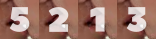
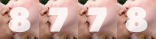
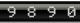

Hit counter and visitor counter
The largest selection of free hit counter
A free web pages hit counters
No Email needed for register your site and use the counter
A counter customizable graphically. The biggest choice of counters. Create your web counter
All our counters are now in https (ssl) and asynchronous, you can use them in all https hosting.
If you wish, you can change your old codes, simply by adding the letter "S" at the end of http; Example: "http" > "https".
A wide range of styles
The most original web counters.
Simple, fast and free of charge. Originals
Web applications
For Chrome, Opera, and Dragon Comodo users.
A unique and free widget.
Applications
Custom Creation
You can not find your counter.
Write us, and ask for custom counters
Write Us
Latest graphic creations


- 
- 
Hit 12 Counter web used

- 
We are working to make it really useful tool, every day we add brand new counters for all tastes.
For users of the Chrome, Opera and Dragon Comodo browser.
The statistics in your browser bar.
Free hit Counter applications for the Chrome and Opera browsers.
In the Chrome Web Store & Store Opera is now offers applications for your web pages.
See online of your web pages.
Page extension : Google Chrome & Opera / Help chrome extension
The largest selection of hit counters
Our free hit counter and visitor counter is simple to install on your blog (overblog , blogspot , blogger , tumblr ...) or website.
Choose a visitor counter and install it in the html pages of your website or your blog. Click here to create the visit counter.
The registration is free and No mail address needed.
You can choose between a javascript counter or simple code html
Our statistics provide information about
- Monthly and daily changes in your traffic
- The number hit and number visitors of your site or blog
- Search engines and keywords
- See the backlink of your site
- Geolocation (country and city) of your visitors
- And many other data that you discover with free counter stat